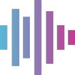

Support FOSS Voquill
Voquill is a personal project I build in my spare time. Donations do not unlock features and this will remain free and open source. Support simply shows me this work is valuable, and helps me justify continuing to invest my time in it.
Donate via PayPal (AUD)
Use the button below to choose an amount, or scan the QR code on a mobile device.

Donations are optional and do not unlock features. FOSS Voquill remains free and MIT licensed.